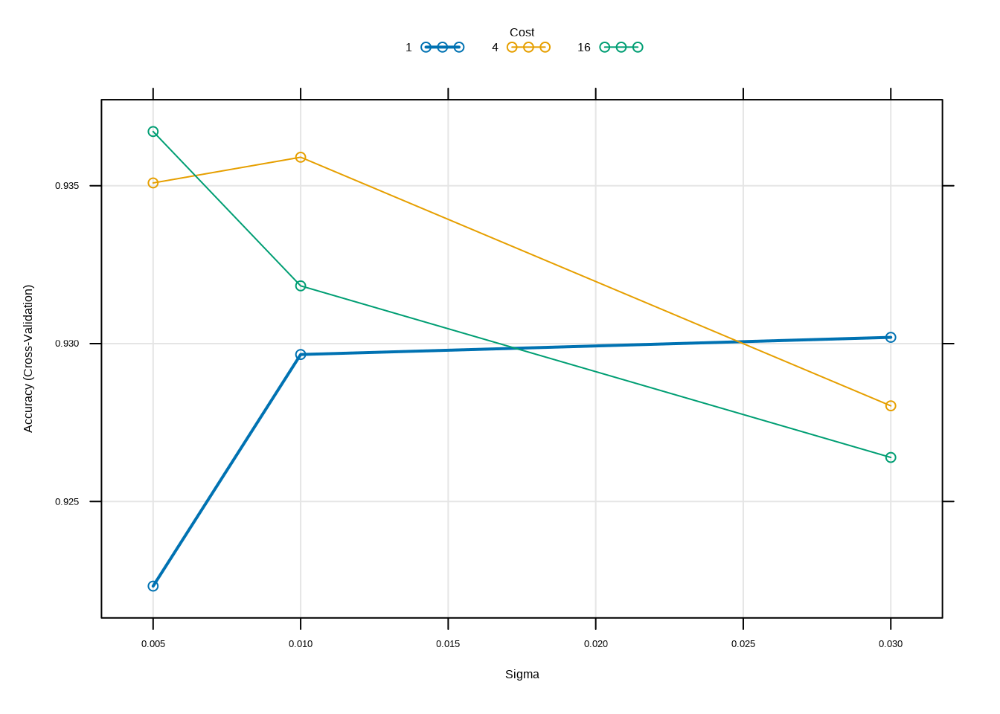

Chapter 16 生成AIによる R コーディング
本章の内容は, 授業の配布資料「生成AI_Rコーディング」と R コード R_genAI_code_example.R に対応する.
生成AI (ChatGPT, Claude, Gemini など) を使って, 分類予測問題で複数のモデルを同時に学習・比較する R コードを作らせた例を示す. 生成されたコードをそのまま信じず, 実行して確かめ, 人間が直すまでの流れを見る.
- 第1部: 生成AIが出力したコード (2025年7月, GPT-4o, プロンプト3回)
- 第2部: 出力を確認して見つけた問題点を, 人間が修正した改良版
課題は, 分類予測モデル4種類 (kNN, ランダムフォレスト, SVM (RBF カーネル), 勾配ブースティング) をパッケージcaretで学習・チューニングし, テストデータで比較することである (データ: パッケージkernlabの spam).
全体の実行には数分かかる.
16.1 生成AIへの指示
最初のプロンプト
使用するパッケージやデータ, チューニングするパラメータ, 出力する内容など, 分析の仕様を具体的に指示した.
Rパッケージ caret を使って, 分類予測問題を解いた例を R コードで示してください.
- 使用する分類モデルは, k近傍法 (kNN), ランダムフォレスト (Random Forest),
サポートベクターマシン (SVM: Gaussian kernel), 勾配ブースティング (gbm) の4種類です.
- データセットは, kernlab パッケージに含まれる spam データを使用してください.
- データは, あらかじめ 80% を訓練用, 20% を検証用に分割します (validation set approach).
- 各モデルについて, 訓練データに対して 5-fold cross validation を用い, 以下のパラメータをチューニングします:
- kNN: 近傍数 k
- SVM: C と gamma
- gbm: 学習率 (shrinkage)
- 検証データに対する予測結果から, confusion matrix を表示し, accuracy, precision, recall, F1 を計算・表示してください.
- 各モデルの評価結果は, 表形式に整理してください.- このプロンプトは, 最初に書いた原稿を生成AIに渡して直してもらったものである.
- もっと大まかな指示で始める方法や, 対話しながら少しずつ指示を足していく方法もある.
- 出力の仕様がはっきりしている場合は, 指示も具体的に書くべきである.
- 仕様を具体的に書いておくほど, 後からの修正指示が少なくて済む.
追加のプロンプト
出力されたコードを実行してから, 次の2つの指示で修正させた.
R で実行し始めましたが, 時間がかかります. 時間が特にかかりそうな場所はどこですか.
各ステップにタイマーを設定し, ラップ時間を表示するように改良してください.このとき生成AIは, 実行時間を減らす工夫として, tuneLength を減らす (例: tuneLength = 3), trainControl(method = "cv", number = 3) として fold 数を減らす, 特徴量選択で変数の数を絞る, といった提案もした.
パラメータチューニングの範囲や, 選択された最終パラメータの値を一覧表示するように改良してください.16.2 生成されたコード (第1部)
上のようにプロンプトを3回与え, 生成AIが出力したコードを, そのまま実行する.
library(caret)
library(kernlab) # spam データ, SVM
library(gbm)
library(randomForest)
# install.packages(c("caret", "kernlab", "gbm", "randomForest"))# データロードと分割
data(spam)
set.seed(123)
cat("== Start: Data Partition ==\n")
#> == Start: Data Partition ==
t_start <- Sys.time()
trainIndex <- createDataPartition(spam$type, p = 0.8, list = FALSE)
trainData <- spam[trainIndex, ]
testData <- spam[-trainIndex, ]
t_end <- Sys.time()
cat("Duration:", round(difftime(t_end, t_start, units = "secs"), 2), "sec\n\n")
#> Duration: 0.01 secctrl <- trainControl(method = "cv", number = 5)
# kNN
cat("== Training: kNN ==\n")
#> == Training: kNN ==
t_start <- Sys.time()
knn_model <- train(type ~ ., data = trainData, method = "knn",
trControl = ctrl, tuneLength = 10)
t_end <- Sys.time()
cat("Duration:", round(difftime(t_end, t_start, units = "secs"), 2), "sec\n\n")
#> Duration: 5.76 sec
cat("kNN tuning candidates:\n"); print(knn_model$results)
#> kNN tuning candidates:
#> k Accuracy Kappa AccuracySD KappaSD
#> 1 5 0.7979349 0.5749206 0.00997044 0.01766480
#> 2 7 0.7914205 0.5597179 0.01659118 0.03114351
#> 3 9 0.7857140 0.5466562 0.02043985 0.03987066
#> 4 11 0.7824487 0.5395782 0.01773198 0.03622694
#> 5 13 0.7778332 0.5294885 0.01513913 0.02863758
#> 6 15 0.7729437 0.5189134 0.01530400 0.03069340
#> 7 17 0.7685988 0.5096245 0.01455800 0.02816584
#> 8 19 0.7688713 0.5098699 0.01535839 0.02840001
#> 9 21 0.7645268 0.5005809 0.01820008 0.03443447
#> 10 23 0.7577344 0.4851065 0.02311847 0.04757803
cat("Best k:\n"); print(knn_model$bestTune); cat("\n")
#> Best k:
#> k
#> 1 5
# Random Forest
cat("== Training: Random Forest ==\n")
#> == Training: Random Forest ==
t_start <- Sys.time()
rf_model <- train(type ~ ., data = trainData, method = "rf",
trControl = ctrl, tuneLength = 5)
t_end <- Sys.time()
cat("Duration:", round(difftime(t_end, t_start, units = "secs"), 2), "sec\n\n")
#> Duration: 135.9 sec
cat("Random Forest tuning candidates:\n"); print(rf_model$results)
#> Random Forest tuning candidates:
#> mtry Accuracy Kappa AccuracySD KappaSD
#> 1 2 0.9432386 0.8800838 0.004817769 0.009753394
#> 2 15 0.9492135 0.8932134 0.004844040 0.010048146
#> 3 29 0.9462281 0.8868691 0.006930239 0.014745599
#> 4 43 0.9435092 0.8813178 0.002966184 0.006015911
#> 5 57 0.9413379 0.8768591 0.004514989 0.009587370
cat("Best mtry:\n"); print(rf_model$bestTune); cat("\n")
#> Best mtry:
#> mtry
#> 2 15
# SVM
cat("== Training: SVM (RBF) ==\n")
#> == Training: SVM (RBF) ==
t_start <- Sys.time()
svm_model <- train(type ~ ., data = trainData, method = "svmRadial",
trControl = ctrl, tuneLength = 5)
t_end <- Sys.time()
cat("Duration:", round(difftime(t_end, t_start, units = "secs"), 2), "sec\n\n")
#> Duration: 16.31 sec
cat("SVM tuning candidates:\n"); print(svm_model$results)
#> SVM tuning candidates:
#> sigma C Accuracy Kappa AccuracySD KappaSD
#> 1 0.02942501 0.25 0.9139037 0.8163864 0.009113929 0.019859748
#> 2 0.02942501 0.50 0.9250391 0.8411845 0.006352306 0.013664365
#> 3 0.02942501 1.00 0.9329158 0.8584251 0.003691116 0.007645367
#> 4 0.02942501 2.00 0.9329158 0.8584527 0.002845820 0.006024444
#> 5 0.02942501 4.00 0.9340032 0.8608235 0.003912305 0.008049610
cat("Best C and sigma:\n"); print(svm_model$bestTune); cat("\n")
#> Best C and sigma:
#> sigma C
#> 5 0.02942501 4
# GBM
cat("== Training: GBM ==\n")
#> == Training: GBM ==
t_start <- Sys.time()
gbm_model <- train(type ~ ., data = trainData, method = "gbm",
trControl = ctrl, verbose = FALSE, tuneLength = 5)
t_end <- Sys.time()
cat("Duration:", round(difftime(t_end, t_start, units = "secs"), 2), "sec\n\n")
#> Duration: 27.89 sec
cat("GBM tuning candidates:\n"); print(gbm_model$results)
#> GBM tuning candidates:
#> shrinkage interaction.depth n.minobsinnode n.trees Accuracy Kappa
#> 1 0.1 1 10 50 0.9163501 0.8212356
#> 6 0.1 2 10 50 0.9318292 0.8557474
#> 11 0.1 3 10 50 0.9378034 0.8685728
#> 16 0.1 4 10 50 0.9375321 0.8680881
#> 21 0.1 5 10 50 0.9394343 0.8720027
#> 2 0.1 1 10 100 0.9307441 0.8532194
#> 7 0.1 2 10 100 0.9421494 0.8779280
#> 12 0.1 3 10 100 0.9443226 0.8826052
#> 17 0.1 4 10 100 0.9432364 0.8802112
#> 22 0.1 5 10 100 0.9448665 0.8838029
#> 3 0.1 1 10 150 0.9372618 0.8673084
#> 8 0.1 2 10 150 0.9448650 0.8836934
#> 13 0.1 3 10 150 0.9478534 0.8902822
#> 18 0.1 4 10 150 0.9459516 0.8861422
#> 23 0.1 5 10 150 0.9505697 0.8961141
#> 4 0.1 1 10 200 0.9416071 0.8767217
#> 9 0.1 2 10 200 0.9448661 0.8838575
#> 14 0.1 3 10 200 0.9481258 0.8909030
#> 19 0.1 4 10 200 0.9467675 0.8880317
#> 24 0.1 5 10 200 0.9497544 0.8943895
#> 5 0.1 1 10 250 0.9424215 0.8784760
#> 10 0.1 2 10 250 0.9470378 0.8884881
#> 15 0.1 3 10 250 0.9470396 0.8887173
#> 20 0.1 4 10 250 0.9473088 0.8892741
#> 25 0.1 5 10 250 0.9511131 0.8972745
#> AccuracySD KappaSD
#> 1 0.005476534 0.011393148
#> 6 0.008463779 0.017513964
#> 11 0.007669477 0.015873609
#> 16 0.006247065 0.013067207
#> 21 0.003929173 0.008025564
#> 2 0.004296590 0.008585207
#> 7 0.007110646 0.014773060
#> 12 0.005188175 0.010567325
#> 17 0.003402714 0.006923910
#> 22 0.004367333 0.008838739
#> 3 0.003899216 0.008089222
#> 8 0.005912044 0.012124776
#> 13 0.006775934 0.013927300
#> 18 0.006048480 0.012557541
#> 23 0.005321683 0.010905760
#> 4 0.003734957 0.007480852
#> 9 0.005821304 0.011697367
#> 14 0.006821367 0.013955762
#> 19 0.008233379 0.017028441
#> 24 0.004519471 0.009521020
#> 5 0.005745020 0.011620359
#> 10 0.006169148 0.012782701
#> 15 0.006151068 0.012582475
#> 20 0.007668703 0.015800107
#> 25 0.004610826 0.009831474
cat("Best parameters (n.trees, interaction.depth, shrinkage, n.minobsinnode):\n")
#> Best parameters (n.trees, interaction.depth, shrinkage, n.minobsinnode):
print(gbm_model$bestTune); cat("\n")
#> n.trees interaction.depth shrinkage n.minobsinnode
#> 25 250 5 0.1 10# モデル評価
evaluate_model <- function(model, testData) {
pred <- predict(model, newdata = testData)
cm <- confusionMatrix(pred, testData$type, positive = "spam")
acc <- cm$overall["Accuracy"]
prec <- cm$byClass["Precision"]
recall <- cm$byClass["Recall"]
f1 <- 2 * (prec * recall) / (prec + recall)
return(c(Accuracy = acc, Precision = prec, Recall = recall, F1 = f1))
}
cat("== Evaluation ==\n")
#> == Evaluation ==
t_start <- Sys.time()
models <- list(kNN = knn_model, RF = rf_model, SVM = svm_model, GBM = gbm_model)
results <- do.call(rbind, lapply(models, evaluate_model, testData = testData))
t_end <- Sys.time()
cat("Duration:", round(difftime(t_end, t_start, units = "secs"), 2), "sec\n\n")
#> Duration: 0.29 sec
print(round(results, 4))
#> Accuracy.Accuracy Precision.Precision Recall.Recall F1.Precision
#> kNN 0.7987 0.7452 0.7431 0.7441
#> RF 0.9521 0.9543 0.9227 0.9382
#> SVM 0.9336 0.9413 0.8867 0.9132
#> GBM 0.9565 0.9548 0.9337 0.944116.3 問題点の確認
コードはエラーなく動くが, 出力をよく見ると, 指示した内容が実現されていない.
- チューニングの指示が反映されていない.
tuneLengthで候補の数だけを指定しており, 何をどの範囲で探すかは caret に任されている. 例えば, gbm の学習率 (shrinkage) は 0.1 に固定されたままで (指示では「学習率をチューニング」), SVM (svmRadial) の sigma (= gamma) も候補を探さず, データから1つの値に決められている.
unique(gbm_model$results$shrinkage) # gbm の学習率の候補
#> [1] 0.1
unique(svm_model$results$sigma) # SVM の sigma の候補
#> [1] 0.02942501- kNN (と SVM) の前処理がない.
距離やカーネルを使う手法では, 変数のスケールをそろえる (標準化する) ことが重要だが, kNN では標準化していない (
svmRadialは関数ksvm()の既定で内部で標準化する).
summary(trainData[, c("capitalAve", "capitalLong", "capitalTotal", "charExclamation")])
#> capitalAve capitalLong capitalTotal charExclamation
#> Min. : 1.000 Min. : 1.00 Min. : 1.0 Min. : 0.0000
#> 1st Qu.: 1.583 1st Qu.: 6.00 1st Qu.: 35.0 1st Qu.: 0.0000
#> Median : 2.277 Median : 15.00 Median : 95.0 Median : 0.0000
#> Mean : 5.607 Mean : 54.85 Mean : 284.5 Mean : 0.2729
#> 3rd Qu.: 3.702 3rd Qu.: 43.00 3rd Qu.: 267.0 3rd Qu.: 0.3088
#> Max. :1102.500 Max. :9989.00 Max. :10062.0 Max. :32.4780- 結果の表の列名が重複・不正確になる.
c()に名前付きの値を入れたため,Accuracy.Accuracyのようになり, F1 の列はF1.Precisionになっている.
colnames(results)
#> [1] "Accuracy.Accuracy" "Precision.Precision" "Recall.Recall"
#> [4] "F1.Precision"- モデルごとに交差検証の分割が異なり, 比較の条件がそろっていない.
改良の方法は2つある.
- 生成AIに, パラメータごとに具体的な候補を指示して直させる
- R コードを手で直す (確実). 次の第2部の改良版は,
tuneGridで候補を明示し, 標準化と共通の CV 分割を加えたもの
16.4 改良版 (第2部)
改良点:
- 各モデルのチューニング候補を
tuneGridで明示する (何を探したかが分かる) - kNN と SVM は
preProcess = c("center", "scale")で標準化する - 全モデルで同じ CV の分割を使う (
trainControl()の引数indexで固定) - 結果の表の列名を整える
set.seed(123)
cv_folds <- createFolds(trainData$type, k = 5, returnTrain = TRUE)
ctrl2 <- trainControl(method = "cv", index = cv_folds)
time_it <- function(expr) { # 経過時間を表示する小さな関数
t0 <- Sys.time(); res <- expr
cat(" 経過時間:", round(difftime(Sys.time(), t0, units = "secs"), 1), "秒\n")
res
}cat("== kNN ==\n")
#> == kNN ==
knn2 <- time_it(train(type ~ ., data = trainData, method = "knn", trControl = ctrl2,
preProcess = c("center", "scale"),
tuneGrid = data.frame(k = c(3, 5, 7, 9, 15, 21))))
#> 経過時間: 4.8 秒
cat("== Random Forest ==\n")
#> == Random Forest ==
rf2 <- time_it(train(type ~ ., data = trainData, method = "rf", trControl = ctrl2, ntree = 300,
tuneGrid = data.frame(mtry = c(3, 7, 15))))
#> 経過時間: 39.5 秒
cat("== SVM (RBF) ==\n")
#> == SVM (RBF) ==
svm2 <- time_it(train(type ~ ., data = trainData, method = "svmRadial", trControl = ctrl2,
preProcess = c("center", "scale"),
tuneGrid = expand.grid(C = c(1, 4, 16), sigma = c(0.005, 0.01, 0.03))))
#> 経過時間: 19.2 秒
# 注) kernlab の sigma は, スライドの γ (gamma) に相当する
cat("== GBM ==\n")
#> == GBM ==
gbm2 <- time_it(train(type ~ ., data = trainData, method = "gbm", trControl = ctrl2, verbose = FALSE,
tuneGrid = expand.grid(n.trees = c(150, 300), interaction.depth = 3,
shrinkage = c(0.01, 0.05, 0.1), n.minobsinnode = 10)))
#> 経過時間: 20.2 秒チューニング結果 (選ばれたパラメータ):
list(kNN = knn2$bestTune, RF = rf2$bestTune, SVM = svm2$bestTune, GBM = gbm2$bestTune)
#> $kNN
#> k
#> 1 3
#>
#> $RF
#> mtry
#> 2 7
#>
#> $SVM
#> sigma C
#> 7 0.005 16
#>
#> $GBM
#> n.trees interaction.depth shrinkage n.minobsinnode
#> 6 300 3 0.1 10
plot(svm2) # CV 正解率とパラメータの関係
テストデータでの評価:
evaluate_model2 <- function(model) {
pred <- predict(model, newdata = testData)
cm <- confusionMatrix(pred, testData$type, positive = "spam", mode = "prec_recall")
c(cm$overall["Accuracy"], cm$byClass[c("Precision", "Recall", "F1")])
}
models2 <- list(kNN = knn2, RF = rf2, SVM = svm2, GBM = gbm2)
(res2 <- round(t(sapply(models2, evaluate_model2)), 4))
#> Accuracy Precision Recall F1
#> kNN 0.9064 0.9012 0.8564 0.8782
#> RF 0.9489 0.9539 0.9144 0.9337
#> SVM 0.9412 0.9375 0.9116 0.9244
#> GBM 0.9499 0.9514 0.9199 0.9354標準化を加えるだけで, kNN のテストデータの正解率は 0.8 から 0.91 に上がった.
同じ CV の分割を使ったので, CV の結果も公平に比較できる.
summary(resamples(models2))
#>
#> Call:
#> summary.resamples(object = resamples(models2))
#>
#> Models: kNN, RF, SVM, GBM
#> Number of resamples: 5
#>
#> Accuracy
#> Min. 1st Qu. Median Mean 3rd Qu. Max. NA's
#> kNN 0.8940217 0.8967391 0.8980978 0.9057500 0.9158752 0.9240163 0
#> RF 0.9429348 0.9497283 0.9524457 0.9511113 0.9538670 0.9565807 0
#> SVM 0.9293478 0.9320652 0.9388587 0.9367165 0.9389417 0.9443691 0
#> GBM 0.9415761 0.9429348 0.9429348 0.9473073 0.9457259 0.9633650 0
#>
#> Kappa
#> Min. 1st Qu. Median Mean 3rd Qu. Max. NA's
#> kNN 0.7778053 0.7808563 0.7849228 0.8014019 0.8241740 0.8392509 0
#> RF 0.8799217 0.8942808 0.8992632 0.8970972 0.9028775 0.9091427 0
#> SVM 0.8516911 0.8573953 0.8696863 0.8667819 0.8710632 0.8840737 0
#> GBM 0.8765390 0.8800670 0.8803567 0.8891893 0.8855990 0.9233849 0参考: 実行結果をコンソールではなくテキストファイルに書き出す場合には, 次のようにする.
16.5 生成AIで R コードを書くときの注意点
- 簡単なタスクでない限り, 1回の指示で完結することはまずない.
- 大きなタスクは小さく分けて指示する.
- 使いたいパッケージや関数が分かっていれば, 指定する.
- 存在しないパッケージ・関数・引数を使ったコードが返ってくることがある (学習した情報が古い・誤っている, またはハルシネーション).
→ 必ず実行して確かめ, バグを取る. 必要に応じてヘルプ (
?関数名) やマニュアルで確認する. - エラーなく動いても, 正しいとは限らない. 上の例のように, 指示が実現されていないことがある. 出力の中身 (チューニングの候補, 選ばれたパラメータ, 前処理) を自分の目で確認する.
- データの扱いに注意する. 個人情報や社外秘のデータを, そのまま外部の生成AIサービスに入力しない. 所属組織のルールに従う.
- 生成AIの利用ルール (授業・試験・レポートで認められる範囲) を守り, 利用した場合はその旨を明記する.
- 生成AIを使った R プログラミングにも, R と統計の基礎知識は欠かせない. 生成されたコードの良し悪しを判断できるのは, 使う人自身である.
2026年時点の補足
- 対話型のチャットに加えて, エディタや RStudio・Positron の中でコードを補完・修正する支援機能や, ファイルを読み書きし, コードを実行しながら作業を進める「コーディング・エージェント」も使われるようになっている.
- どの道具を使う場合でも, 上の注意点 (実行して確かめる, 出力を自分で確認する, データの扱いに注意する) は変わらない.
自主課題
- 生成AIに, 第1部のコードの問題点を指摘させてみよう. 上の (a)〜(d) をすべて見つけられるか?
- 金融データ (例: SVM の章の
card_default.csv) で同じ比較を行うコードを, 生成AIに書かせてみよう. クラスの不均衡 (延滞は全体の7%程度) に対して, どのような工夫を提案するか?